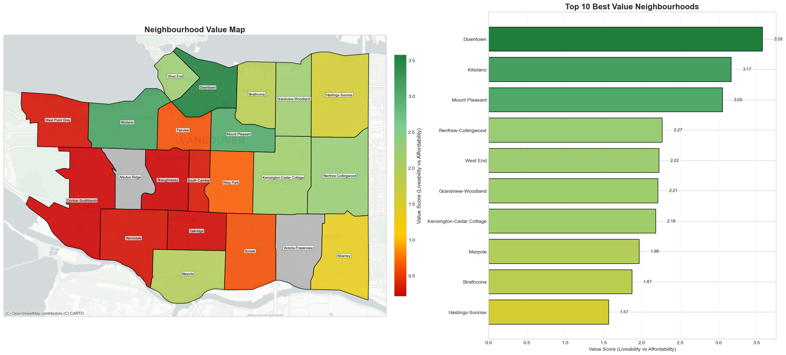

Vancouver Neighbourhood Liveability Score
A composite index measuring which Vancouver neighbourhoods offer the best quality of life for the cost, across housing, safety, culture and business.
- Role
- Scoring pipeline and composite index, team project
- Built with
- Python, SQL, GeoPandas, Matplotlib
- Methods
- Weighted scoring, K-means clustering

149,383
property tax records
26,774
crime incidents
60,000+
business licences
435
cultural spaces
The question
Vancouver was ranked North America's most liveable city in 2025, yet remains one of its least affordable. The analysis asks where that trade-off pays off, particularly for first-time buyers.
Approach
- Scored housing, safety, culture and business on a 1 to 5 scale relative to the city
- Weighted crimes by severity using Crime Severity Index weights
- Joined all four on neighbourhood into one score: 30% housing, 30% safety, 20% culture, 20% business
Findings
- Four archetypes. K-means grouped neighbourhoods into an urban hub, a business core, a cultural corridor and emerging suburbs.
- An east/west divide. West side neighbourhoods are the least affordable, and no cluster leads on all four dimensions.
- Best value. Downtown, Kitsilano and Mount Pleasant give first-time buyers the strongest mix of amenities and affordability.
- Takeaway. There is no perfect neighbourhood. The best choice depends on what you value most.